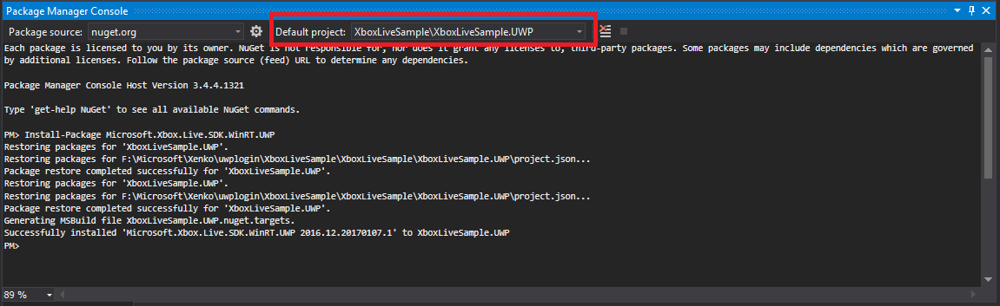
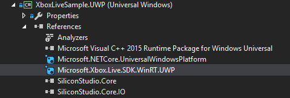
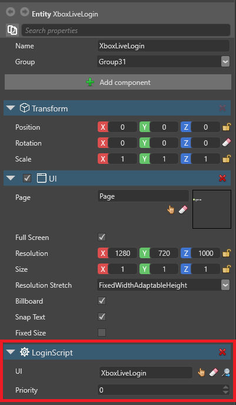
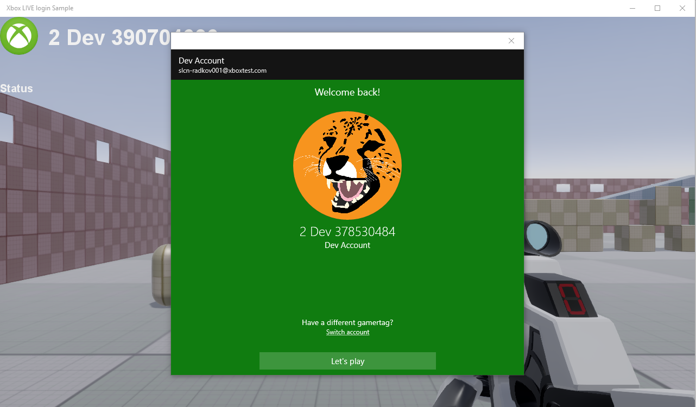

Xbox Live
Warning
Приносим свои извинения за неудобства. Для этой страницы нет перевода на русский язык. Она будет отображаться на английском языке.
This page explains how to configure your project to work with Xbox Live.
1. Before you start
Make sure your project uses UWP as a platform. To do this, you can either:
- create a project and select UWP as a platform, or
- add UWP as a platform to an existing project
Tip
For this tutorial, you might find it useful to create a new project to test the process, then apply the knowledge to your existing projects.
Make sure you can run the project from UWP. To do this, in Visual Studio, select the platform you want (UWP-64, UWP-32, or UWP-ARM) from the Solution Platform drop-down list, and run the project.
Download the Xbox Live SDK.
To write this page, we used XboxLiveSDK-1612-20170114-002. The sample is loosely based on the Achievements sample in the Xbox Live SDK.
Change your Xbox Live environment. In the SDK folder, under Tools, run:
SwitchSandbox.cmd XDKS.1XDKS.1 is the sandbox used for the Microsoft samples.
Warning
This blocks regular Xbox accounts and only permits developer accounts. To switch back, run:
SwitchSandbox.cmd RETAILMake sure you can run the Achievements sample with your developer account.
2. Add the Xbox Live SDK to your solution
In Visual Studio, open your game solution.
Open the Package Manager Console (Tools > NuGet Package Manager > Package Manager Console).
In the Default project field, select your UWP project (eg MyGame.UWP).

In the console, type:
PM > Install-Package Microsoft.Xbox.Live.SDK.WinRT.UWPVisual Studio adds the NuGet package to your project.
Make sure the package appears in the References list.

3. Configure the UWP project
Delete MyGame.UWP.TemporaryKey.pfx.
Add xboxservices.config to your project.
You can get this file from any Xbox Live SDK sample (eg the Achievements sample) for test purposes. When you want to publish the game, change the TitleId and Service config Id with the ones provided for your project. For details, see the Xbox Live documentation.
In the xboxservices.config properties, under Build Action, select Content, and under Copy to Output Directory, select Always.

Edit Package.appxmanifest with details relevant to your project.
Again, you can use the manifest file from any Xbox Live SDK sample (eg the Achievements sample) for test purposes. If you associate your game with a store app, use the generated manifest file. For details, see the Xbox Live documentation.
Make sure the capability InternetClientServer is enabled.
4. Add user account scripts to your game
You need to enable Xbox Live capability in your game project without exposing the Xbox Live SDK. As MyGame.UWP already references MyGame.Game, we can't reference it. Instead, we can create an interface and implement it from the UWP project side.
Note
There are several ways to do this. This page explains one method.
Add two interfaces to your game,
IAccountManagerandIConnectedAccount.On your UWP project (eg MyGame.UWP), implement the interfaces
public class XboxAccount : IConnectedAccountandpublic class XboxLiveAccountManager : IAccountManager.Add the account factory to your game so you can access it later from a game script. In the
MyGameMainPage.xaml.cs, add the following line:Game.Services.AddService(typeof(IAccountManager), new XboxLiveAccountManager());
The final script should look like this at minimum:
public class LoginScript : AsyncScript { private IConnectedAccount account; public override async Task Execute() { var accountMgr = Services.GetServiceAs<IAccountManager>(); account = accountMgr?.CreateConnectedAccount(); if (account == null) return; var result = account.LoginAsync(); // TODO Add your code here! } }
Now you can expose the xbox_live_user functionality and other classes in your game.

Sample project
Download a sample project with Xbox Live login functionality
